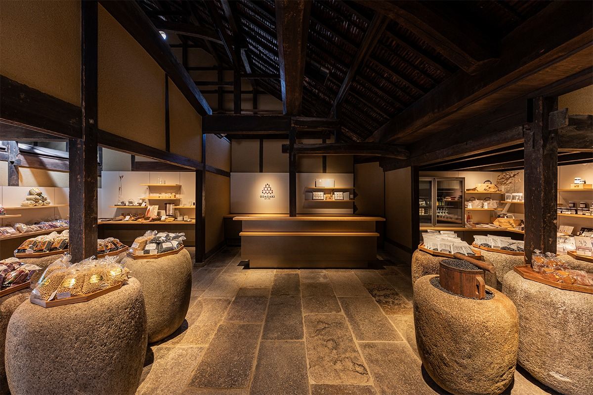
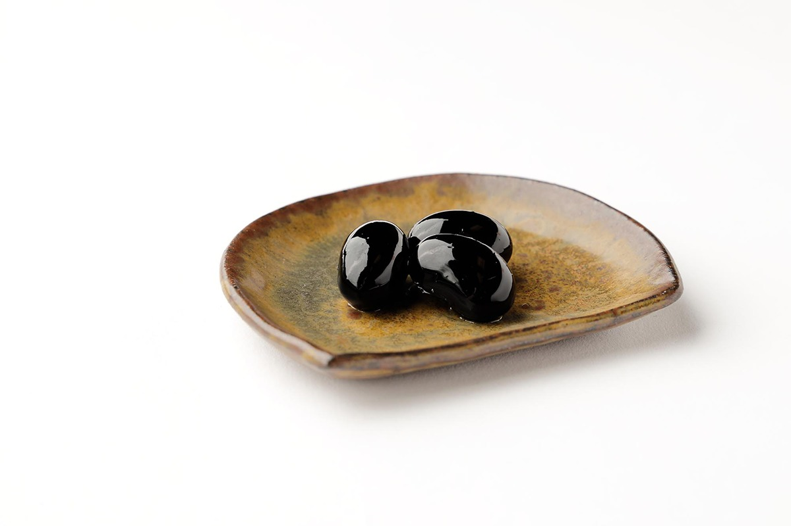
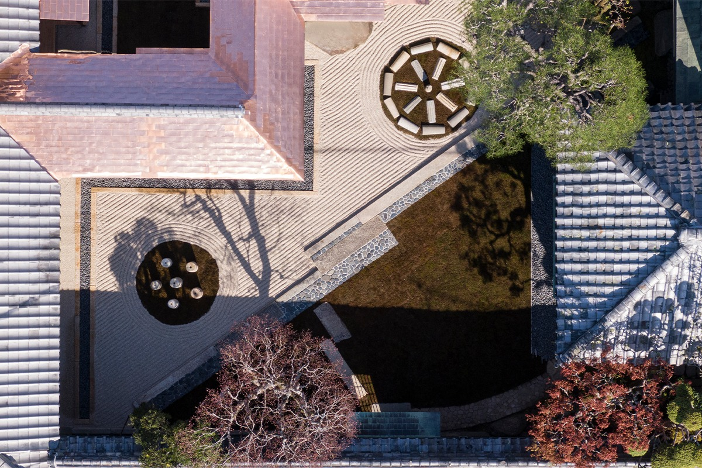
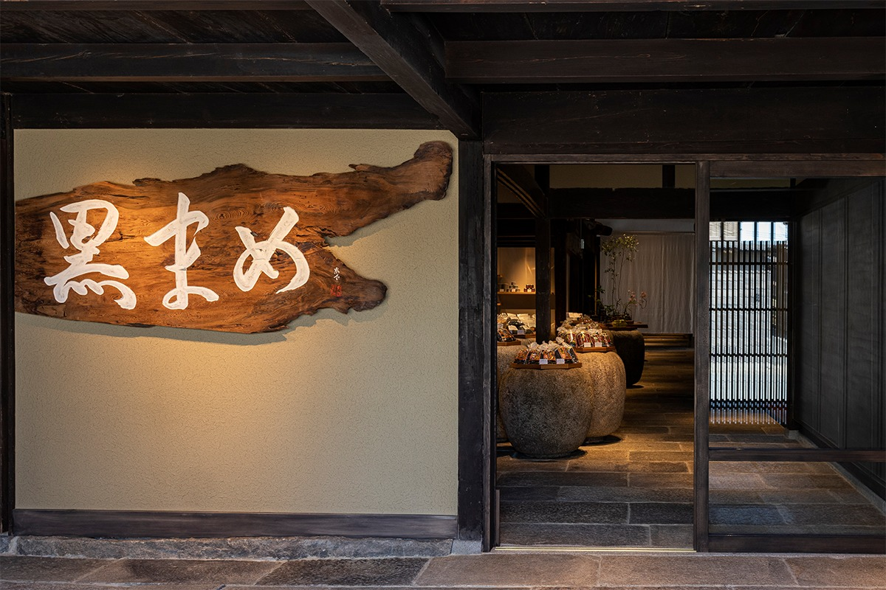
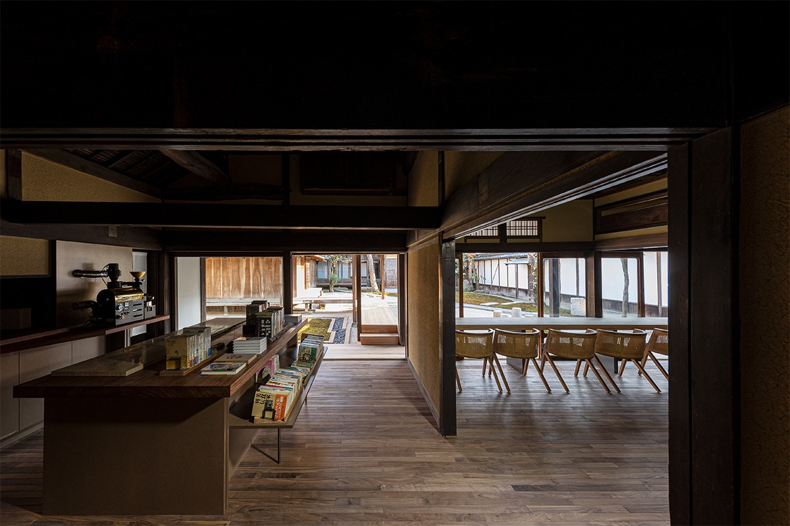
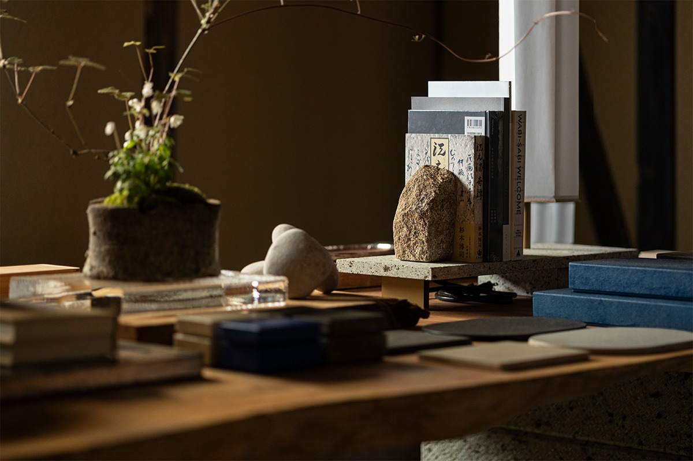

Префектура Хёго · Сасаяма · еда
Чёрные бобы Тамба: лавка «Одагаки сётэн» в Сасаяме, которой почти три века

Сасаяма в краю Тамба славится чёрными соевыми бобами, без которых в Японии не обходится новогодний стол. Старинная лавка, где ими торгуют, работает здесь с 1734 года, а её старые постройки привёл в порядок Хироси Сугимото.
Лавка
Почти триста лет на одной улице
Сасаяма это старый призамковый город в горах на востоке префектуры Хёго, в краю, который по старому делению называется Тамба. Лавку «Одагаки сётэн» основал здесь, на улице Тацумати, Рокудзаэмон Одагаки в 1734 году. С началом эпохи Мэйдзи, после 1868 года, его потомки занялись торговлей семенами, и с тех пор лавка связала свою судьбу с местными чёрными бобами.
Чёрную сою в Тамбе выращивали с давних времён. Поколение за поколением местные земледельцы отбирали для посева лучшие бобы, и так появился сегодняшний сорт: крупный и очень вкусный.
В 2021 году главный магазин «Одагаки сётэн» обновили после большой реконструкции, и теперь сюда едут не только за бобами, но и ради самих зданий.
Сорт
Чем бобы Тамба отличаются от прочих

«Тамба-гуро» это название сорта чёрной сои, который родом из края Тамба. Зёрна у него крупные и круглые, а сваренные бобы получаются пышными и чуть тягучими, приятными на вкус, особенно сладкими и ароматными.
Секрет в долгом созревании. У обычной чёрной сои от цветения до спелости проходит около 70 дней, а у «Тамба-гуро» около 100. Почти месяц лишнего времени боб копит питательные вещества и вырастает крупнее.
В японских ресторанах и дома эти бобы готовят к Новому году, они входят в праздничное угощение и обещают тихое счастье на весь год. Но и в будни горсть бобов делает обычный обед или чаепитие чуть богаче.
Архитектура
Вернуть дома в эпоху Тайсё

На территории главной конторы «Одагаки сётэн» стоят десять построек, возведённых между концом эпохи Эдо и началом эпохи Тайсё, то есть примерно с первой половины XIX века до 1910-х годов. Все десять внесены в государственный реестр культурных ценностей Японии.
Пять из них перестроило архитектурное бюро «Синсодзай кэнкюдзё», которое возглавляют Хироси Сугимото, известный японский фотограф и художник, и его партнёр-архитектор. Сам Сугимото заново спланировал сад в центре усадьбы.
Новое к старому здесь не пристраивали. Дома укрепили от землетрясений теми же приёмами, какими их когда-то строили, и работа больше походила на реставрацию, которая ведёт назад во времени. Если вынести из лавки витрины и прилавки, говорят авторы, она вернётся в эпоху Тайсё. Пространство получилось вневременным и почти незаметным.
Интерьеры узнаются по почерку бюро: бережное обращение с материалом, строгие детали, красивые формы. Сами здания сохранили простое народное обаяние и красоту вещей, сделанных для дела, а мебель и предметы нарочно выбраны так, чтобы с ними контрастировать.
Магазин
Бобы, сладости и ремёсла Тамбы

В магазине продают лучшее сырьё края: крупные чёрные бобы «Тамба-гуро», красную фасоль адзуки «Тамба дайнагон» и бобы «Тамба-но куросая». Есть сладости из отборных продуктов, вещи, окрашенные отваром чёрных бобов, и ремесленные изделия, которые до сих пор делают в округе Сасаямы.
Взгляд сразу ловит старую каменную чашу для омовения рук в форме натумэ, коробочки для чайного порошка. В ней горкой насыпаны чёрные бобы, и это, пожалуй, самая фотогеничная деталь зала.
«Одагаки сётэн», главный магазин
- Адрес
- префектура Хёго, Тамба-Сасаяма, Тацумати, 19
- Телефон
- +81 79-552-0011
- Часы работы
- 9:30–17:30
- Выходные
- новогодние праздники
- Сайт
- odagaki.co.jp
Кафе
«Одагаки Мамэдо» и чай из чёрных бобов

Кафе при лавке встречает бумажным фонарём с надписью «Мамэдо», «Бобовый зал», которую написал от руки Хироси Сугимото, и запахом жареных бобов. Здешний чай из чёрных бобов есть только у «Одагаки сётэн»: часть бобов обжаривают слегка, чтобы раскрыть их сладость и аромат, а потом заваривают вместе с бобами глубокой обжарки.
К чаю подают то, что стоит попробовать именно здесь: сладости из каштанов Тамба и чёрных бобов, а также сэндвич с ростбифом из говядины Сасаяма.
За стойкой из цельного кедра открывается вид на каменный сад «Бобовая тропа», одно из главных мест обновлённой усадьбы. В кафе продаются новые и букинистические книги об архитектуре, искусстве, еде и путешествиях. Мест 34, есть две отдельные комнаты.

Весной 2021 года, сразу после обновления, бюро «Синсодзай кэнкюдзё» вместе с магазином «Архипелаго» из Сасаямы открыло в лавке временный концептуальный магазин. Он проработал до 9 мая 2021 года.
Кафе «Одагаки Мамэдо»
- Адрес
- префектура Хёго, Тамба-Сасаяма, Тацумати, 19
- Телефон
- +81 79-552-0011
- Часы работы
- 10:00–16:00, последний заказ в 15:30
- Выходные
- четверг (если это праздник, то следующий будний день), новогодние праздники
- Сайт
- odagaki.co.jp
Фото: Масатомо Морияма.